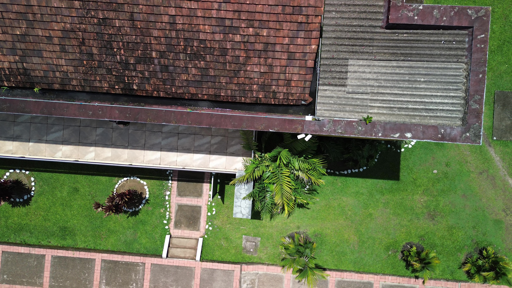
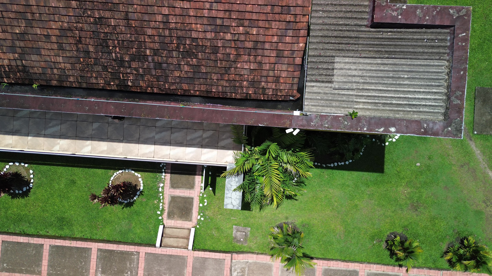

5. Descripción de Zonas
5.1. Salón de eventos
Diagnóstico visual: Funcional en general, pero con acumulación de residuos y manchas de humedad. En la zona de cocina (adaptada como restaurante) se identifican manchas activas y filtraciones visibles tras lluvias recientes.
Causa técnica: Incremento de vapores en cocina sin ventilación adecuada + desgaste de tejas y sellos.
Evidencia:
- zona_comun_AEREA.jpg: manchas y residuos sobre tejas
- zona_comun.jpg / zona_comun_1.jpg: cerchas funcionales, pero sin mantenimiento reciente
- zona_comun_COCINA.jpg: filtración localizada y desprendimiento de pintura
Recomendaciones:
- Revisión y reemplazo de tejas deterioradas
- Aplicación de impermeabilizante en líneas superiores
- Mejora del sistema de ventilación en cocina
- Pintura antihumedad en cielorrasos
5.2. Gimnasio y canchas de squash
Diagnóstico visual: Manchas fúngicas activas en esquinas y zonas sin ventilación. Moho y deterioro superficial por humedad estancada.
Causa técnica: Pendiente insuficiente (<1 %) + obstrucción parcial de canaletas.
Evidencia: Manchas oscuras, desprendimientos, corrosión visible
Recomendaciones:
- Ajuste de pendiente al 1.8 %
- Limpieza periódica de canaletas
- Aplicación de sellador fungicida profesional
5.3. Tienda
Diagnóstico visual: Infiltraciones activas en esquinas del cielo raso. Desde el dron se observa acumulación de residuos vegetales en la unión de aguas.
Causa técnica: Obstrucción de canaletas ocultas y falta de pendiente funcional.
Evidencia:
- TIENDA_AEREA.jpg: acumulación de bambú y hojas
- TIENDA.jpg: escurrimientos internos, daños menores

Recomendaciones:
- Limpieza profunda
- Instalación de mallas anti-hojas (4 mm)
- Sellado con impermeabilizante elastomérico
- Revisión del plafón afectado
5.4. Baño de la tienda
Diagnóstico visual: Goteo puntual, abultamientos y manchas aisladas. Cubierta con desgaste leve pero funcional.
Causa técnica: Fallas localizadas en sellos o tejas individuales.
Evidencia:
- BANO_TIENDA.jpg / BANO_TIENDA_2.jpg: humedad y desprendimientos
- BANO_TIENDA_AEREA.jpg: desgaste superficial de tejas
Recomendaciones:
- Reemplazo puntual de tejas
- Reencauche de uniones
- Pintura antifúngica interior
5.5. Techo de la capilla
Diagnóstico visual: Humedad severa y crecimiento fúngico en plafones, alineados con la diagonal de escurrimiento. Se observan plantas creciendo en la canaleta.
Causa técnica: Canaletas diagonales obstruidas + diseño complejo + residuos vegetales.
Evidencia:
- CAPILLA_AEREA.jpg: canaletas taponadas, vegetación activa
- CAPILLA_1-3.jpg: moho, filtraciones, desprendimiento de pintura

Recomendaciones:
- Limpieza total con remoción de vegetación
- Canaletas desmontables con malla anti-hojas
- Impermeabilizante bicomponente en uniones
- Repinte antifúngico en plafones
 
